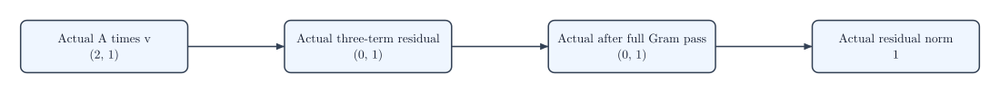
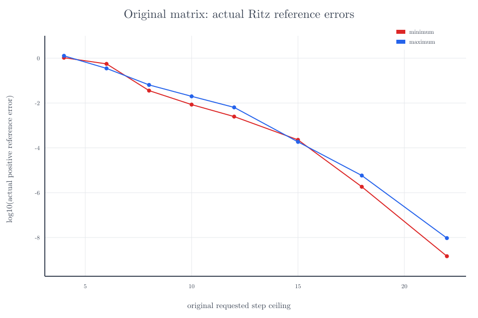
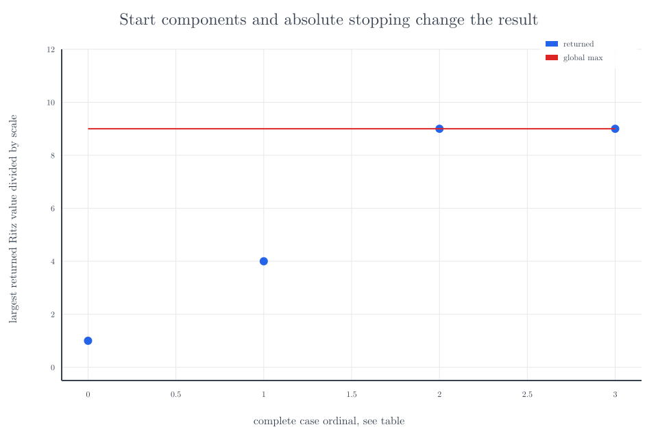
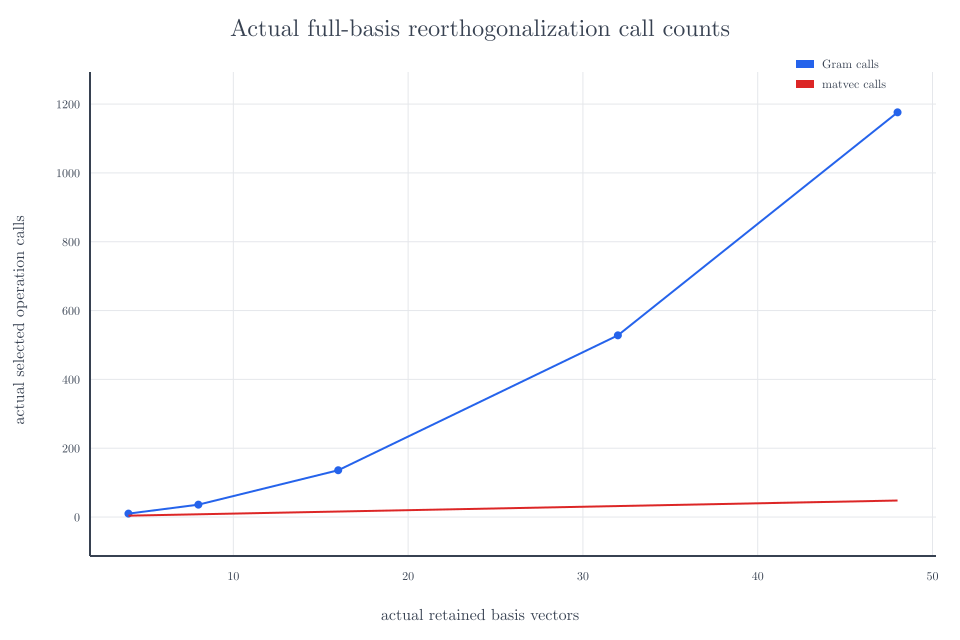

Lanczos through actual reorthogonalized stages
Abstract
Approximating a few eigenvalues of a symmetric matrix can be cheaper than solving the full dense eigenproblem. Lanczos builds a Krylov basis and a small tridiagonal projection whose eigenvalues are Ritz approximations. We inspect actual matrix products, recurrence residuals and sequential reorthogonalization coefficients, retain the original30-by30 matrix and requested step counts, and evaluate full Ritz-vector residuals. A small residual, a finite step limit and missing start-vector components impose different limits on any spectral conclusion.
The three-term recurrence with full stored reorthogonalization
Start with v0=b/|b|. For each basis vector form
For symmetric A and exact orthogonal arithmetic, earlier basis directions cancel, yielding a tridiagonal projection. The native implementation additionally performs one complete sequential Gram pass over all current stored basis vectors: compute h=q^T w on the current residual, subtract h*q, then continue. After this pass beta_j=|w| and, unless stopping, v_next=w/beta_j. Actual trace coefficients are these sequential h values, not projections recomputed on an earlier residual.
This implementation stores the full basis and reorthogonalizes against it, so dense work is O(m*n²+n*m²) with O(n*m) basis storage. It is not a constant-memory two-vector-only method. One rounded pass does not certify exact orthogonality. The historical absolute residual threshold1e-12 is retained and is not scale invariant; at most min(requested,n) basis vectors are formed. Exact zero and tiny nonzero starts are distinguished using a widened norm fallback when ordinary squares underflow/overflow.
Two dimensions: see the actual producing stages
For A=[[2,1],[1,2]] and b=(1,0), the first product is(2,1), alpha2, three-term residual(0,1) and beta1. The next basis vector is(0,1), after which the residual is zero. The actual projected eigenvalues are3 and1.
#include <dm/dm.hpp>
int main() {
std::filesystem::create_directories("build");
const std::vector<std::vector<double>> A = {{2, 1}, {1, 2}};
const auto t = dm::algorithms::lanczos_trace(A, {1, 0}, 2);
std::print("| actual iteration | alpha | previous beta | residual norm after full Gram pass |\n| ---: | " "---: | ---: | ---: |\n");
for (const auto &e : t.steps)
std::print("| {} | {:.12f} | {:.12f} | {:.12e} |\n", e.iteration,
e.alpha, e.beta_previous, e.residual_norm);
std::print("\n| actual iteration | projected basis identity | actual sequential Gram coefficient |\n| " "---: | ---: | ---: |\n");
for (const auto &e : t.projections)
std::print("| {} | {} | {:.12e} |\n", e.iteration, e.basis_index,
e.coefficient);
const auto r = dm::algorithms::lanczos_ritz_analysis(A, t.result);
std::print("\n| actual Ritz mode | native value | explicit full-matrix residual norm |\n| ---: | ---: | " "---: |\n");
for (std::size_t i = 0; i < r.values.size(); ++i)
std::print("| {} | {:.12f} | {:.12e} |\n", i, r.values[i],
r.residual_norms[i]);
const auto &e = t.steps.front();
dm::graphics::Diagram d;
d.node("av", {0, 0},
std::format("Actual A times v\n({}, {})", e.matrix_product[0],
e.matrix_product[1])).node("three", {6, 0},
std::format(
"Actual three-term residual\n({}, {})",
e.three_term[0],
e.three_term[1])).node(
"gram", {12, 0},
std::format("Actual after full Gram pass\n({}, {})", e.residual[0],
e.residual[1])).node("beta", {18, 0},
std::format("Actual residual norm\n{}",
e.residual_norm)).edge(
"av", "three").edge("three", "gram").edge("gram", "beta").save_svg(
"build/lanczos_stages.svg");
}| actual iteration | alpha | previous beta | residual norm after full Gram pass |
|---|---|---|---|
| 0 | 2.000000000000 | 0.000000000000 | 1.000000000000e+00 |
| 1 | 2.000000000000 | 1.000000000000 | 0.000000000000e+00 |
| actual iteration | projected basis identity | actual sequential Gram coefficient |
|---|---|---|
| 0 | 0 | 0.000000000000e+00 |
| 1 | 0 | 0.000000000000e+00 |
| 1 | 1 | 0.000000000000e+00 |
| actual Ritz mode | native value | explicit full-matrix residual norm |
|---|---|---|
| 0 | 3.000000000000 | 0.000000000000e+00 |
| 1 | 1.000000000000 | 0.000000000000e+00 |

Original30-by30 matrix and requested steps
Retain the exact original upper-triangle32-bit LCG fixture: state2024, update1103515245*s+12345 modulo2^32, value=((s>>16)%1000)/500−1, then mirror to enforce symmetry. The start is thirty ones and requested step counts are4,6,8,10,12,15,18,22. Each is a separate complete native run. A native dense Jacobi eigensystem of the original matrix supplies an approximate reference, replacing the old “true spectrum” wording; independent NumPy checks are required during batch verification.
The small native T eigensystem uses the actual retained alpha and first m−1 beta values. The helper forms each full Ritz vector from the actual basis and explicitly evaluates A*y−theta*y with widened diagnostics. This includes observed reorthogonalization/rounding defects that terminal_beta*last_coefficient alone would omit. Eigenvalues are descending in this native helper. Positive actual reference errors are plotted as log10 values; exact displayed zeros are left in the table and omitted from the logarithmic curve, never replaced by an invented floor.
#include <dm/dm.hpp>
int main() {
std::filesystem::create_directories("build");
const auto A = dm::algorithms::lanczos_demo_matrix();
dm::linalg::DenseMatrix<double> M(30, 30, 0);
for (int i = 0; i < 30; ++i)
for (int j = 0; j < 30; ++j)
M(i, j) = A[i][j];
const auto reference = dm::linalg::jacobi_eigen(M, 1e-13, 100);
std::print("Native dense reference minimum {:.12f}; maximum {:.12f}.\n\n",
reference.eigenvalues.back(), reference.eigenvalues.front());
std::print("| original requested steps | actual basis vectors | minimum Ritz reference error | maximum " "Ritz reference error | minimum-mode explicit residual over vector norm | maximum-mode " "explicit residual over vector norm | basis Gram maximum error | projection maximum error " "|\n| ---: | ---: | ---: | ---: | ---: | ---: | ---: | ---: |\n");
std::vector<double> xlo, ylo, xhi, yhi;
for (int m : {4, 6, 8, 10, 12, 15, 18, 22}) {
const auto t =
dm::algorithms::lanczos_trace(A, std::vector<double>(30, 1), m);
const auto r = dm::algorithms::lanczos_ritz_analysis(A, t.result);
const double lo =
std::abs(r.values.back() - reference.eigenvalues.back()), hi =
std::abs(r.values.front() - reference.eigenvalues.front());
std::print("| {} | {} | {:.12e} | {:.12e} | {:.12e} | {:.12e} | {:.12e} | {:.12e} |\n",
m, t.result.alpha.size(), lo, hi,
r.residual_norms.back() / r.vector_norms.back(),
r.residual_norms.front() / r.vector_norms.front(),
r.orthogonality_error, r.projection_error);
if (lo > 0) {
xlo.push_back(m);
ylo.push_back(std::log10(lo));
}
if (hi > 0) {
xhi.push_back(m);
yhi.push_back(std::log10(hi));
}
}
auto p = dm::graphics::RPlot::create();
p.line(xlo, ylo, "minimum", {220, 38, 38}, 2).points(xlo, ylo, "",
{220, 38, 38}, 4).line(
xhi, yhi, "maximum", {37, 99, 235}, 2).points(xhi, yhi, "",
{37, 99, 235}, 4).title(
"Original matrix: actual Ritz reference errors").x_label(
"original requested step ceiling").y_label("log10(actual positive reference error)").save_svg("build/lanczos_original.svg");
}Native dense reference minimum -5.546220134226; maximum 4.967601964783.
| original requested steps | actual basis vectors | minimum Ritz reference error | maximum Ritz reference error | minimum-mode explicit residual over vector norm | maximum-mode explicit residual over vector norm | basis Gram maximum error | projection maximum error |
|---|---|---|---|---|---|---|---|
| 4 | 4 | 1.047542852829e+00 | 1.275085180677e+00 | 7.039633613061e-01 | 1.380244227447e+00 | 1.424099553560e-16 | 4.807352432801e-16 |
| 6 | 6 | 5.572713973734e-01 | 3.503920049350e-01 | 9.788800199674e-01 | 8.058812902462e-01 | 1.773754754186e-16 | 5.095750210682e-16 |
| 8 | 8 | 3.575309923592e-02 | 6.415624962549e-02 | 3.027986616345e-01 | 3.431907420608e-01 | 2.493664996717e-16 | 5.095750210682e-16 |
| 10 | 10 | 8.499562833379e-03 | 1.988945609199e-02 | 1.111893303419e-01 | 1.730262655364e-01 | 2.493664996717e-16 | 5.535936292711e-16 |
| 12 | 12 | 2.481160662706e-03 | 6.388118697443e-03 | 5.876557015373e-02 | 9.893450258257e-02 | 2.493664996717e-16 | 5.535936292711e-16 |
| 15 | 15 | 2.276133526191e-04 | 1.848687174926e-04 | 2.451125542972e-02 | 2.635117189567e-02 | 2.493664996717e-16 | 5.535936292711e-16 |
| 18 | 18 | 1.836285023593e-06 | 5.830600670720e-06 | 2.767163725910e-03 | 3.870961668473e-03 | 2.493664996717e-16 | 6.451002926289e-16 |
| 22 | 22 | 1.467332921834e-09 | 9.440407566785e-09 | 7.178902594500e-05 | 1.626449853280e-04 | 2.493664996717e-16 | 6.451002926289e-16 |

A residual does not prove a missing extreme
For diag(1,2,9), start(1,0,0) spans only the eigenvalue1 direction. It produces an exact eigenpair with zero residual while completely missing the global largest eigenvalue9. Starting with all ones admits every direction. Scaling the matrix by1e−14 makes the historical absolute stopping threshold trigger after a nonzero first residual, showing why that threshold is not an exact invariant-subspace or relative-accuracy certificate.
In exact symmetric arithmetic, a formed nonzero y satisfies distance(theta,spectrum(A))<=|A*y−theta*y|/|y|. This asserts proximity to some eigenvalue, not that it is the largest/smallest or that every spectral direction was present. Native widened norms are numerical observations rather than exact-real bounds with certified rounding error.
#include <dm/dm.hpp>
int main() {
std::filesystem::create_directories("build");
std::vector<double> x, y;
std::print("| case ordinal | matrix scale | start direction | actual basis vectors | actual stop code | " "actual largest returned Ritz divided by scale | largest explicit residual over vector norm " "divided by scale |\n| ---: | ---: | --- | ---: | ---: | ---: | ---: |\n");
const std::vector<double> scales = {1, 1e-14, 1, 1e14};
for (std::size_t i = 0; i < scales.size(); ++i) {
const double s = scales[i];
const std::vector<std::vector<double>> A = {{s, 0, 0}, {0, 2 * s, 0},
{0, 0, 9 * s}};
const std::vector<double> b =
i == 0 ? std::vector<double>{1, 0, 0}
: std::vector<double>{1, 1, 1};
const auto t = dm::algorithms::lanczos_trace(A, b, 3);
const auto r = dm::algorithms::lanczos_ritz_analysis(A, t.result);
std::print("| {} | {:.3e} | {} | {} | {} | {:.12f} | {:.12e} |\n", i, s,
i == 0 ? "first axis" : "all ones", t.result.alpha.size(),
int(t.stop), r.values.front() / s,
r.residual_norms.front() / r.vector_norms.front() / s);
x.push_back(i);
y.push_back(r.values.front() / s);
}
std::print("\nActual zero-start basis vectors {}.\n",
dm::algorithms::lanczos_trace({{1}}, {0}, 4).result.alpha.size());
auto p = dm::graphics::RPlot::create();
p.points(x, y, "returned", {37, 99, 235}, 6).line({0, 3}, {9, 9},
"global max",
{220, 38, 38}, 2).y_limits(-.5, 12).title("Start components and absolute stopping change the result").x_label("complete case ordinal, see table").y_label("largest returned Ritz value divided by scale").save_svg("build/lanczos_limits.svg");
}| case ordinal | matrix scale | start direction | actual basis vectors | actual stop code | actual largest returned Ritz divided by scale | largest explicit residual over vector norm divided by scale |
|---|---|---|---|---|---|---|
| 0 | 1.000e+00 | first axis | 1 | 1 | 1.000000000000 | 0.000000000000e+00 |
| 1 | 1.000e-14 | all ones | 1 | 1 | 4.000000000000 | 3.559026084010e+00 |
| 2 | 1.000e+00 | all ones | 3 | 1 | 9.000000000000 | 1.808777963064e-15 |
| 3 | 1.000e+14 | all ones | 3 | 1 | 9.000000000000 | 9.151227435752e-16 |
Actual zero-start basis vectors 0.

Checking actual dense and reorthogonalization work
For d completed iterations, matrix-vector calls equal d and scalar matrix products equal n²*d. One full Gram pass projects against1,2,…,d stored vectors, giving d(d+1)/2 actual projections and d+d(d+1)/2 counted alpha/Gram inner products. Initial plus residual norms give d+1 calls on a nonzero attempted run. Counts exclude coordinate norm arithmetic, validation, copying, allocation and time. The basis/storage and reorthogonalization cost must not be hidden by describing only the three-term recurrence.
Use a finite exactly symmetric64-by64 tridiagonal with diagonal1 through64 and off-diagonal0.25, and perform each requested complete run separately. The table checks actual counter identities using actual retained d rather than assuming every requested step was executed.
#include <dm/dm.hpp>
int main() {
std::filesystem::create_directories("build");
constexpr std::size_t n = 64;
std::vector<std::vector<double>> A(n, std::vector<double>(n));
for (std::size_t i = 0; i < n; ++i) {
A[i][i] = i + 1;
if (i + 1 < n)
A[i][i + 1] = A[i + 1][i] = .25;
}
std::vector<double> x, y, z;
std::print("| actual requested steps | actual retained d | actual matvec calls | actual scalar matrix " "products | n squared times d | actual Gram projections | d times d plus1 over2 | actual " "counted inner products | actual norm calls |\n| ---: | ---: | ---: | ---: | ---: | ---: | " "---: | ---: | ---: |\n");
for (int m : {4, 8, 16, 32, 48}) {
const auto t =
dm::algorithms::lanczos_trace(A, std::vector<double>(n, 1), m);
const auto d = t.result.alpha.size();
std::print("| {} | {} | {} | {} | {} | {} | {} | {} | {} |\n", m, d,
t.work.matvecs, t.work.matrix_products, n * n * d,
t.work.reorth_projections, d * (d + 1) / 2,
t.work.dot_products, t.work.norm_evaluations);
x.push_back(d);
y.push_back(t.work.reorth_projections);
z.push_back(t.work.matvecs);
}
auto p = dm::graphics::RPlot::create();
p.line(x, y, "Gram calls", {37, 99, 235}, 2).points(x, y, "", {37, 99, 235},
4).line(x, z,
"matvec calls",
{220, 38, 38}, 2).title("Actual full-basis reorthogonalization call counts").x_label("actual retained basis vectors").y_label("actual selected operation calls").save_svg("build/lanczos_work.svg");
}| actual requested steps | actual retained d | actual matvec calls | actual scalar matrix products | n squared times d | actual Gram projections | d times d plus1 over2 | actual counted inner products | actual norm calls |
|---|---|---|---|---|---|---|---|---|
| 4 | 4 | 4 | 16384 | 16384 | 10 | 10 | 14 | 5 |
| 8 | 8 | 8 | 32768 | 32768 | 36 | 36 | 44 | 9 |
| 16 | 16 | 16 | 65536 | 65536 | 136 | 136 | 152 | 17 |
| 32 | 32 | 32 | 131072 | 131072 | 528 | 528 | 560 | 33 |
| 48 | 48 | 48 | 196608 | 196608 | 1176 | 1176 | 1224 | 49 |

Scope and verification
Inputs are completely finite, square, exactly symmetric and matched, with nonnegative requested steps. The native residual threshold is absolute1e-12; full dimension bounds the basis even if a tiny residual remains. Historical beta layout is retained: first d−1 entries form T, with a possible extra actual terminal residual norm when stopping before the requested count. Ritz analysis checks complete shape/finite/mode geometry, but does not certify that supplied coefficients came from the supplied matrix.
Trace capture owns original matrix/start, actual stage vectors and actual sequential Gram coefficients. The million-entry default counts n*n+n originals,1+3*n per stage and each Gram record, admitted before its producing work; zero disables only this optional ceiling. Result basis/coefficients, runtime copies, fields/capacities and bytes/RAM are excluded. All diagnostics are rounded observations, not rigorous interval certificates or a universal convergence rate.
Independent NumPy eigensystems and explicit full-matrix residual calculations
checked13 studies,133 actual stages,1223 actual Gram coefficients and all13 Ritz
analyses, including the original exact LCG matrix. Diagnostics checked actual
basis orthogonality, projection defects, formed vectors and residual proximity
to some eigenvalue, while preserving the missing-component and
absolute-threshold counterexamples. All100 ordinary frozen fits matched alpha,
beta and complete basis bitwise. Native controls include analytic full
tridiagonal spectra, original full basis, tiny/zero starts, complete
shape/symmetry/quota guards and ownership. The ten-report shared build passed141
native CTest cases,45 directly instrumented address/undefined-behaviour
sanitizer cases,90 compiled/executed public examples,412/412 scoped file
definitions plus11/11 changed lagged-Fibonacci engine definitions, and ten
representative clangd hovers. All four complete report programs executed and all
four native figures were visually reviewed. Receipts and repeatable checks are
retained under build/mepml-conversion/batch-184-193/.
References
C. Lanczos(1950), An Iteration Method for the Solution of the Eigenvalue Problem of Linear Differential and Integral Operators, Journal of Research of the National Bureau of Standards45(4),255–282. One-pass full reorthogonalization, finite-arithmetic guards, absolute stopping and explicit full residual diagnostics are the native variant used here.